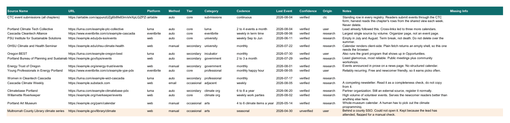
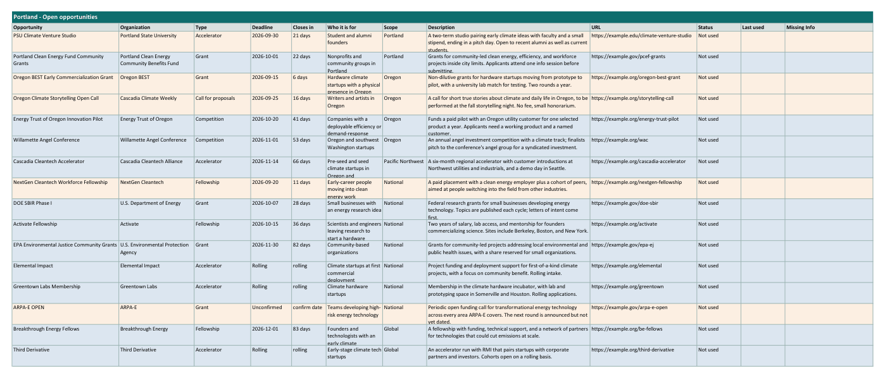

Step 06 of 08 · Week two
Newsletter
Two files your issues draw from. The source list: once, then every three months. The opportunities queue: every month.
Build your source list
Everywhere events get announced in your city. Every harvest only finds what this list points at.
With no source list yet, Claude starts here.
Claude asks first whether you have your own links
The calendars you already check by hand are the best rows: a real person vouched for them. Three ways to go:
- Paste your links, then Claude researches tooVerifies yours, follows their cross-links, runs the full nine-category search. Best coverage. Recommended.
- Paste your links onlyVerifies them and stops. Fastest.
- Claude researches from scratchNo links needed.
Paste links in your first message and Claude takes that as your answer.
Claude searches Luma, Eventbrite, universities, incubators, city government, professional groups and arts venues. Every source gets five checks:
- It loads
- It ran something in the last 90 days
- It repeats on a pattern
- It is a real, climate-relevant organization
- Its web address is stable
A failed check is named, not dropped quietly. You decide.
Read the list before approving it. You live there. Add the meetup everyone goes to if it is missing.
One row is in every chapter's list: the Climate Tech Cities event submission form. Readers send events through it; the harvest reads them every week.
What you get back
| Source Name | URL | Platform | Method | Tier | Category | Cadence | Last Event | Confidence | Origin | Notes |
|---|---|---|---|---|---|---|---|---|---|---|
| CTC event submissions (all chapters) | airtable.com/… | airtable | auto | core | submissions | continuous | 2026-08-04 | verified | ctc | Standing row in every registry |
| Portland Climate Tech Collective | luma.com/… | luma | auto | core | luma | 2 to 4 events a month | 2026-08-04 | verified | user | Lead already followed this |
| PSU Institute for Sustainable Solutions | example.edu/… | web | auto | core | university | weekly Sep to Jun | 2026-06-11 | verified | research | Empty in July and August. Term break, not death |
Unverified rows are shaded; any missing field is shaded red and named. Fictional Portland chapter.

DownloadRefresh your opportunities
Grants, fellowships, accelerators and open calls, in one file your issues draw from. Monthly.
Claude sweeps program pages, public funders, aggregators, LinkedIn through your browser if you say yes, and the organizations in your partner map.
- At least 15 open opportunities in the file after every run, carried ones included
- A mix of accelerators, grants, and fellowships, never all of one kind
- Local opportunities lead the file, national ones sit below
- Anything past its deadline moves to a Closed sheet
- Rolling programs count, and are listed as Rolling
What you get back
| Opportunity | Organization | Type | Deadline | Who it is for | Scope | Status |
|---|---|---|---|---|---|---|
| PSU Climate Venture Studio | Portland State University | Accelerator | 2026-09-30 | Student and alumni founders | Portland | Not used |
| Portland Clean Energy Fund Community Grants | Portland Clean Energy Community Benefits Fund | Grant | 2026-10-01 | Nonprofits and community groups in Portland | Portland | Not used |
| Oregon BEST Early Commercialization Grant | Oregon BEST | Grant | 2026-09-15 | Hardware climate startups with a physical presence | Oregon | Not used |
The Open sheet. A Closed sheet appears beside it the first time something expires; this sample has none yet. Fictional Portland chapter.

Download